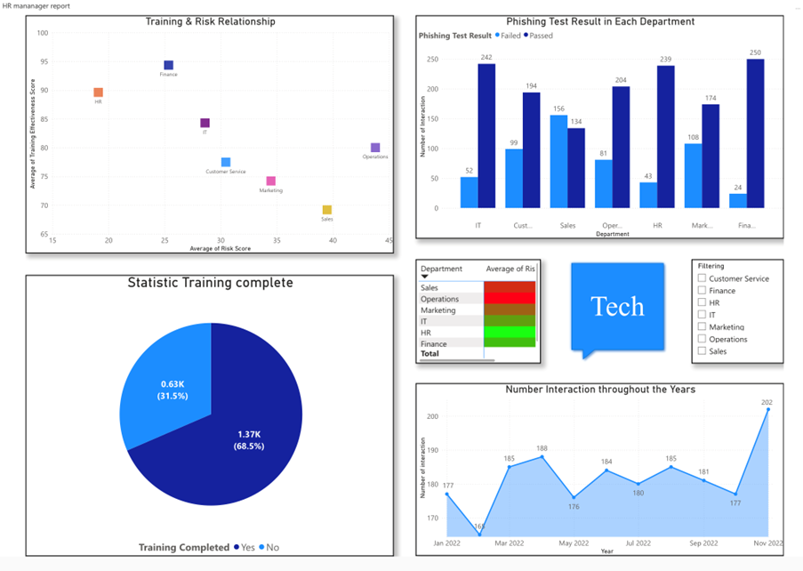
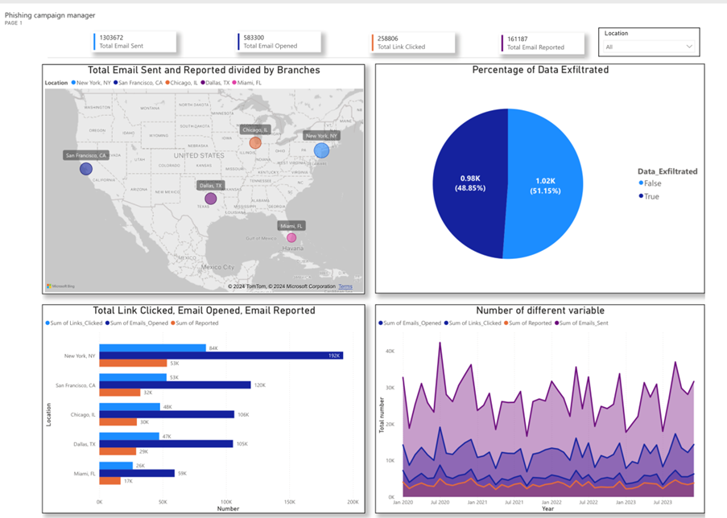
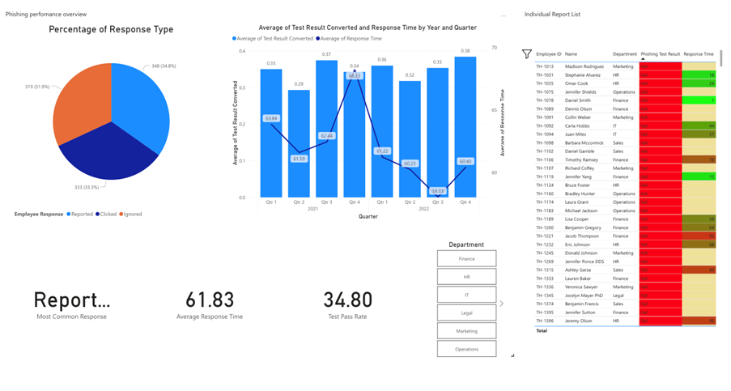

Cybersecurity Risk &
Employee Behaviour Analytics
Built stakeholder-focused Power BI dashboards to monitor phishing risk, training effectiveness, and behavioural vulnerabilities across the organisation.

Business Context
TechCorp launched a phishing awareness program to strengthen employee readiness and reduce cyber risk. However, leadership needed a clearer way to monitor employee behaviour, training completion, and organisational exposure across departments and branches.
Problem Statement
The organisation lacked a centralised reporting solution to identify high-risk teams, evaluate training effectiveness, and improve the targeting of future awareness campaigns.
Objective
Design a Power BI solution that supports different stakeholders with practical insights into risk exposure, behavioural gaps, campaign performance, and incident reporting.
Stakeholder-Based Dashboard Design
- HR Manager Dashboard for department-level risk and training oversight
- Phishing Campaign Manager Dashboard for campaign effectiveness and branch-level analysis
- Individual Employee Dashboard for personal performance, training history, and risk awareness
Dashboard Views by Stakeholder
1. HR Manager Dashboard
Designed to monitor department-level risk, compare training effectiveness across teams, and identify high-risk groups requiring targeted intervention.

2. Phishing Campaign Manager Dashboard
Focused on campaign performance, branch-level phishing behaviour, click and report patterns, and operational monitoring of awareness initiatives.

3. Individual Employee Dashboard
Gives employees visibility into their own phishing test results, response behaviour, training history, and personal risk awareness.
Approach
The dashboards were designed to support both high-level monitoring and detailed drill-down analysis. I used KPI tracking, interactive filters, and stakeholder-specific visual design to make the reporting more actionable.
Key Insights
- Risk is uneven across departments: Operations and Sales showed the highest exposure, while HR, Finance, and IT performed more strongly.
- Training gaps remain: A meaningful share of employees had not completed phishing training.
- Behavioural vulnerabilities are visible: Click-through behaviour and slow response times indicate ongoing exposure to phishing threats.
- Regional differences matter: Larger branches showed much higher engagement and reporting volumes than smaller locations.
Recommendations
- Target high-risk departments with more intensive and tailored training
- Improve training completion rates through stronger monitoring and accountability
- Adjust awareness programs by branch and behaviour pattern
- Use dashboards for ongoing tracking of risk, response, and reporting performance
Business Impact
This solution supports more proactive cybersecurity management by helping the organisation identify risk earlier, improve training effectiveness, and intervene more strategically.
Tools Used
Power BI, Dashboard Design, KPI Analysis, Data Visualisation